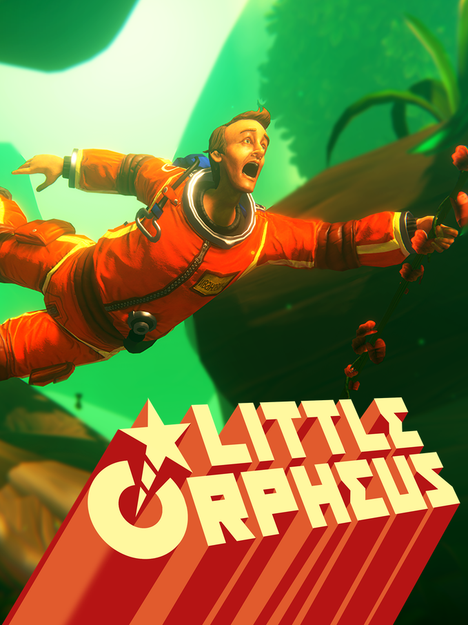

Little Orpheus
Little Orpheus
Details
|  | |
| Playtime | Not Played |
| Last Activity | Never |
| Added | 12/30/2023 6:40:47 |
| Modified | 12/30/2023 7:07:44 |
| Completion Status | Not Played |
| Library | Steam |
| Source | Steam |
| Platform | PC (Windows) |
| Release Date | 6/12/2020 |
| Community Score | 67 |
| Critic Score | 65 |
| User Score | |
| Genre | Adventure Platform Puzzle |
| Developer | The Chinese Room |
| Publisher | Sumo Digital |
| Feature | Single Player |
| Links | Official iPad Wikipedia Steam Epic Twitch |
| Tag | |
Description

The year is 1962 and NASA are trying to put a man on the moon. In a remote corner of Siberia, a Soviet cosmonaut is heading in the other direction. Comrade Ivan Ivanovich is dropped into an extinct volcano in his exploration capsule, Little Orpheus, to explore the center of the earth. He promptly vanishes.
Three years later he emerges claiming to have saved the world. He has also lost the atomic bomb powering the Little Orpheus. He is taken to a top-secret bunker deep below the Ural mountains to be debriefed by the fearsome General Yurkovoi, a man so frightening even Stalin won’t buy him a drink. The General rolls up his sleeves, fixes Ivan with a steely glare and say “So... where have you been comrade? And where is my bomb?” And Ivan looks him right back in the eye and says “Well General, you might not believe what happened to me, but I’ll do my best. Because it happened like this...”
Join our bold yet hapless hero as he explores lost civilizations, undersea kingdoms, prehistoric jungles and lands beyond imagination. Gasp as he battles the subhuman tribe of the Menkv and escapes the clutches of dreadful monsters! Cheer as he triumphs over impossible odds and brings socialism to the subterranean worlds!

Little Orpheus is a technicolor side-scrolling adventure game inspired by classic movies like Flash Gordon, Sinbad and The Land that Time Forgot. The platforming and light puzzles solving of Little Orpheus are simple enough for casual players but rich enough for seasoned adventure fans.
If you’re a fan of old school family blockbusters, want a rollercoaster story that’ll take you to the Earth’s core and beyond, or are just in some need of ideologically correct entertainment, join the most unlikely hero to hit PC and consoles on an adventure beyond belief. With stunning visuals, brilliant acting and a world-class score, Little Orpheus is a subterranean epic you’ll never forget. Comrades, to the center!

Features
- A stunning, colorful world remastered for PC with hi-res textures, new moves and animations, enhanced graphics and lighting effects, and more.
- A gripping story full of humor and adventure by the award-winning masters at The Chinese Room, creators of Dear Esther and Everybody’s Gone to the Rapture.
- Award-winning vocal performances and a world-class music score by BAFTA-winning composer Jessica Curry and Jim Fowler, enhanced for PC in 5.1 surround sound.
- Includes the bonus 9th episode A Rush of Onion to the Head and the Lost Recordings Mode.

A HERO WILL EMERGE!